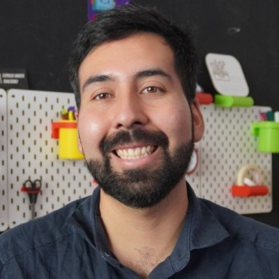

I studied industrial design at Diego Portales University and I am now doing a Master's in Design Sciences at Adolfo Ibáñez University. I started out designing objects and ended up specializing in the places where people learn by making: maker labs, course programs and kits a teacher can use without me standing next to them.
Since 2022 I have been director of research, development and innovation at Ideo Maker. There I am part of the team that designs, installs and launches maker classrooms for Fundación Chile in Antofagasta and Atacama, and for the País Digital Foundation in Sierra Gorda. My part goes from the survey with the community and the 3D model to training the teachers. I also designed Bicho-bot and work on the development of MK-BOT, two educational kits by Ideo Maker. Between 2022 and 2025 I created and taught seven courses in the PENTA UC Program at the Pontifical Catholic University of Chile, on robotics, game design and technology, all of them my own.
What interests me is the part nobody photographs. That the FabLab is still running three years after the opening. That the safety protocol is written down. That the teacher can teach the class without me. A maker space that depends on whoever installed it is not a maker space, it is a demo.
Before that I was head of design at Converso, graphic designer at INFAS at Alberto Hurtado University, and photographer for ECLAC and the Pan American Health Organization. Today I add data science and the development of web apps and platforms, almost always starting from a concrete problem: a workout I wanted to measure, an inventory kept on paper, a language barrier in a medical appointment. I look for projects where the design has to keep running, not just be delivered.

Experience
2022 – presentDirector of Research, Development and InnovationIdeo Maker
2026Workshop trainerIdeo Maker, for Anglo American
2022 – 2025Teacher, seven original coursesPENTA UC, Pontifical Catholic University of Chile
2025Support professional, Technological Exploration and Prototyping WorkshopUniversidad del Desarrollo
2025Teacher, Space Exploration and RoboticsCREA UC Program
2025Robotics workshop teacher, with MK-BOTFrancisco Bilbao School, Recoleta
2024Research and Development DesignerAtacama Biomaterials
2024Teacher, Robotics and Design ThinkingAndrés Bello School
2023Instructional Design ConsultantTICAL
2023PhotographerECLAC and the Pan American Health Organization
2022 – 2023Robotics teacherLo Barnechea Cultural Corporation
2021Head of DesignConverso
2021Graphic designerINFAS, Alberto Hurtado University
2020InternshipGraphic Exploration Lab, UDP
2020InternshipAmercanda, museum design
2019 – 2021Member of the Mental Health CommitteeDiego Portales University
2019VolunteerThe Heart of London Living, London
2018UDP Solar Team, Haalur solar carAtacama Solar Challenge
2017Vice President of the Design Student CouncilDiego Portales University
Education
2026 – presentMaster's in Design SciencesAdolfo Ibáñez University
2025 – 2026Data ScienceDesafío Latam
2015 – 2021Industrial Design, passed with distinctionDiego Portales University
2024Impact Metrics: ESG + Innovation for StartupsCOLAB, UC Innovation Center
2022Unreal Engine 5 for Augmented and Virtual RealityNúcleo School
2021 – 2022Semi-Intensive English ProgramInternational Language Institute, Washington DC
2019Intensive English, Callan MethodEnglish Express, London
2017Acting intensivePontifical Catholic University of Chile
2021AnsioSOS thesis project, passed with distinctionDiego Portales University
2018First place, Atacama Solar Challenge, Cruiser categoryUDP Solar Team, Haalur solar car
Languages
Spanish, nativeEnglish, B2
Institutions
Ideo MakerFundación ChilePaís Digital FoundationMustakis FoundationCongreso Futuro en tu comunaAnglo AmericanMinistry of HealthPENTA UCCREA UCUniversidad del DesarrolloDiego Portales UniversityAdolfo Ibáñez UniversityAlberto Hurtado UniversityAtacama BiomaterialsCEPALOPS/PAHOAndrés Bello SchoolSanta Cruz CorporationLo Barnechea Cultural CorporationTICALConversoLH&A London